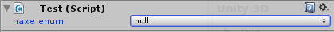
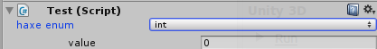

Unity3D on steroids
Adding Unity to your supersonic Haxe toolbox
Created by Cauê Waneck / @cwaneck
Why Unity3D?
- Most popular tool for 3D games
- Multiple targets: web-based using a plugin
- Awesome editor
- Flash "refugees"
- Don't fight, assimilate
- Asset store
- Because
WE CAN
Why Haxe?
- Very little change in workflow
- Unity as a target: Natively target even more platforms
- Awesome open-source community
- Future-proof code base
- Networking: Same code base
- Elegant and feature-rich language
- Functional and imperative programming
- Pattern matching, array comprehensions, ADTs and so much more
- Did I mention... macros ?
Why Haxe? (tl;dr)

Getting started with Unity/Haxe
How it was
Now
```bash
$ haxe -net-lib libs/UnityEngine.dll -net-lib libs/UnityEditor.dll
```
net-lib
- Haxe/C#'s counterpart of -java-lib and -swf-lib
- No need to create externs
- Do pratically anything you can do with pure C# code
- Properties, events, delegates, overloaded functions ...
Generated code
import cs.NativeArray;
import unityengine.*;
@:nativeGen class ExampleScript extends unityengine.MonoBehaviour
{
public var stringProp:String;
public var arrayProp:NativeArray<Int>;
public var vectorProp:Vector3;
@:protected var protectedVar:Int;
function Update()
{
Debug.Log("It's working!");
}
}
Generated code
#pragma warning disable 109, 114, 219, 429, 168, 162
public class ExampleScript : global::UnityEngine.MonoBehaviour {
public ExampleScript() : base() {
}
public string stringProp;
public int[] arrayProp;
public global::UnityEngine.Vector3 vectorProp;
protected int protectedVar;
public virtual void Update() {
global::UnityEngine.Debug.Log(((object) ("It\'s working!") ));
}
}
Error positions
Equivalence
Code
//C#
EditorApplication.update += delegate() { Debug.Log("update"); };
void Update() {}
SomeComponent comp = GetComponent<SomeComponent>();
[UnityEngine.InitializeOnLoad] public class Something ...
//Haxe
EditorApplication.update += function() Debug.Log('update');
function Update() {}
var comp:SomeComponent = GetComponent(); //or var comp = (GetComponent() : SomeComponent)
@:meta(UnityEngine.InitializeOnLoad) class Something ...
Steroids
WIP: unihx
Goal: Unity powered by Haxe
https://github.com/waneck/unihx
$ haxelib run unihx init path/to/dir
Danger: Proof-of-concept. User discretion is advised
unihx features
- Automatic recompilation (using compilation server)
- Generate files in the folder relative to where they are
- Drag & Drop support for Haxe classes
- Avoid the generated C# code warnings
- Mix pure C# code with Haxe and cross-reference between them
- Add Vector / Quaternion operator overloading
unihx features
Haxe API overrides
- trace() -> Debug.Log
- haxe.Timer
- haxe.Http -> UnityEngine.WWW (planned)
HaxeBehaviour
- Supports non-constant expressions on the initializer
- Automatically sets @:nativeGen
HaxeBehaviour macros
1. Comments show up in inspector
2. Extra properties through comment tags
3. Custom controls
4. Editor-time control events
5. Haxe types support
 